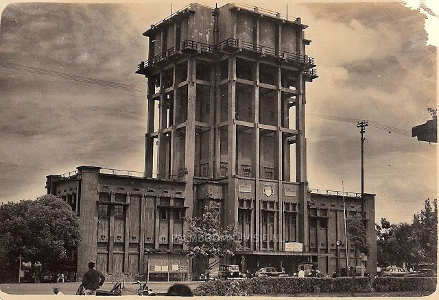
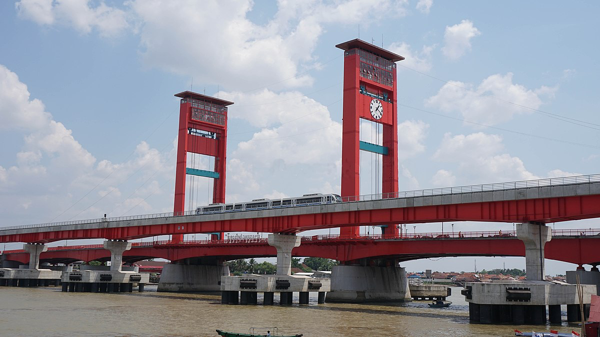

title 1
Palembang dikenal sebagai pusat Kerajaan Sriwijaya yang menjadi kerajaan maritim terbesar di Asia Tenggara pada abad ke-7 hingga abad ke-12. Bukti sejarah seperti Prasasti Kedukan Bukit menunjukkan adanya pusat kekuasaan di Palembang sejak tahun 683 Masehi.
title 2
Palembang dikenal sebagai pusat Kerajaan Sriwijaya yang menjadi kerajaan maritim terbesar di Asia Tenggara pada abad ke-7 hingga abad ke-12. Bukti sejarah seperti Prasasti Kedukan Bukit menunjukkan adanya pusat kekuasaan di Palembang sejak tahun 683 Masehi.